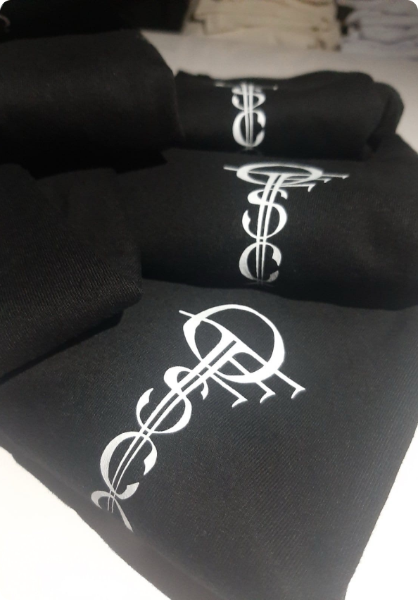
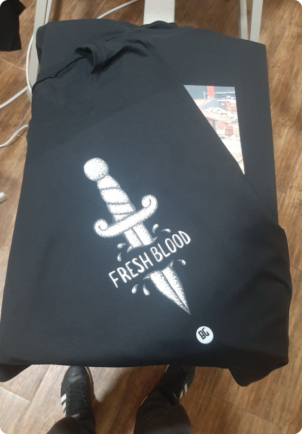
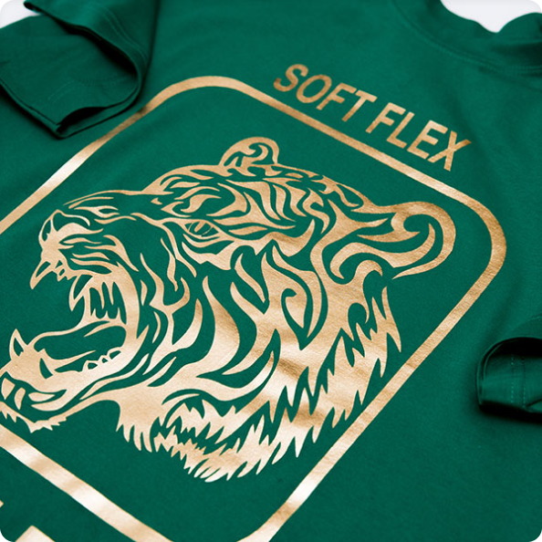
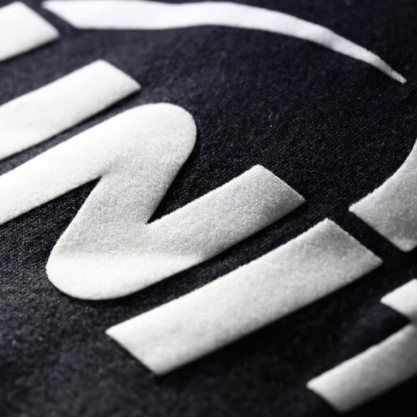
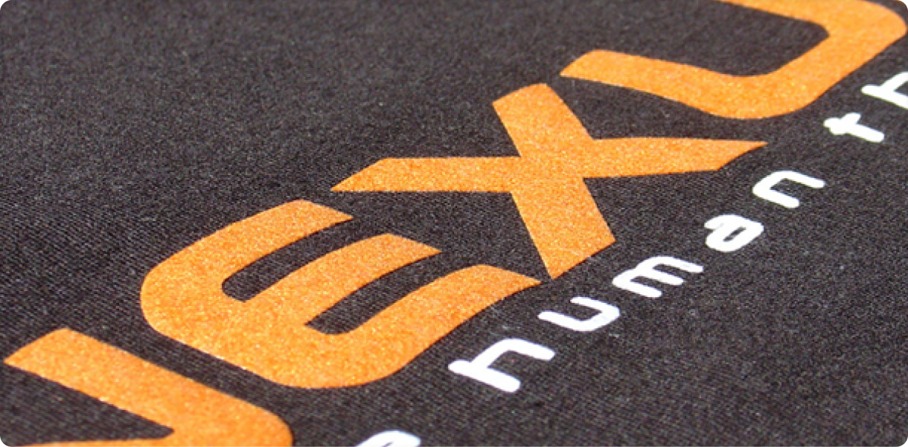

Flok Štampa – Luksuzna i Teksturisana Rešenja za Personalizaciju Tekstila
Naša flok štampa je specijalizovana tehnika koja pruža luksuzan, baršunast izgled i teksturu na tekstilnim proizvodima poput majica, dukseva, torbi, i drugih promotivnih artikala. Ovaj način štampe omogućava trodimenzionalne otiske sa mekom i prijatnom teksturom, čineći vaše proizvode jedinstvenim i upečatljivim.
Flok štampa je savršena za izradu modnih kolekcija, personalizovanih poklona, i promotivnih proizvoda koji zahtevaju visok kvalitet i dugotrajnost. Otisci napravljeni ovom tehnikom su izuzetno otporni na pranje i habanje, što ih čini idealnim za dugoročnu upotrebu.
- Luksuzna baršunasta tekstura koja se izdvaja
- Dugotrajni otisci otporni na pranje i habanje
- Pogodna za različite vrste tekstila, posebno za pamuk i poliester
- Idealna za personalizovane majice, dukseve i modne dodatke
- Mogućnost štampe u različitim bojama sa preciznim detaljima




Bilo da želite unikatnu personalizovanu odeću, ili promotivne artikle visokog kvaliteta, naša flok štampa je pravo rešenje za vas. Kontaktirajte nas danas kako bismo vam pomogli da ostvarite svoje kreativne ideje i kreirate proizvode koji se ističu!
Fleks štampa omogućava prirodne boje i veoma dobar kontrast, ovako nanete boje su veoma dugotrajne i otporne na veliki broj pranja tekstila. Boje nanete na ovaj način su veoma tanke i zbog toga su otporne na istezanje i habanje, fleksibilne su i izdržljive, a aplikacije imaju veoma oštre i jasne linije. Fleks štampa se preoporučuje za štampanje aplikacija sa komplikovanim dizajnom a one imaju odličnu postojanost i kvalitet izrade.
KONTAKTIRAJTE NAS